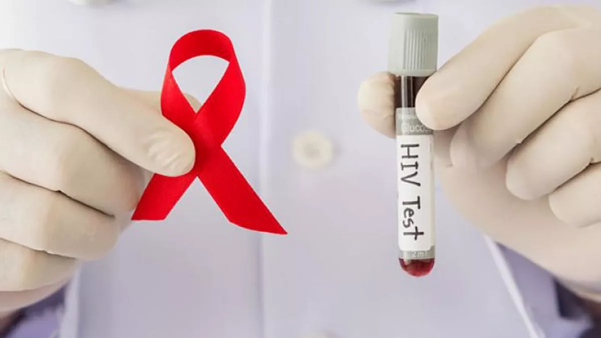
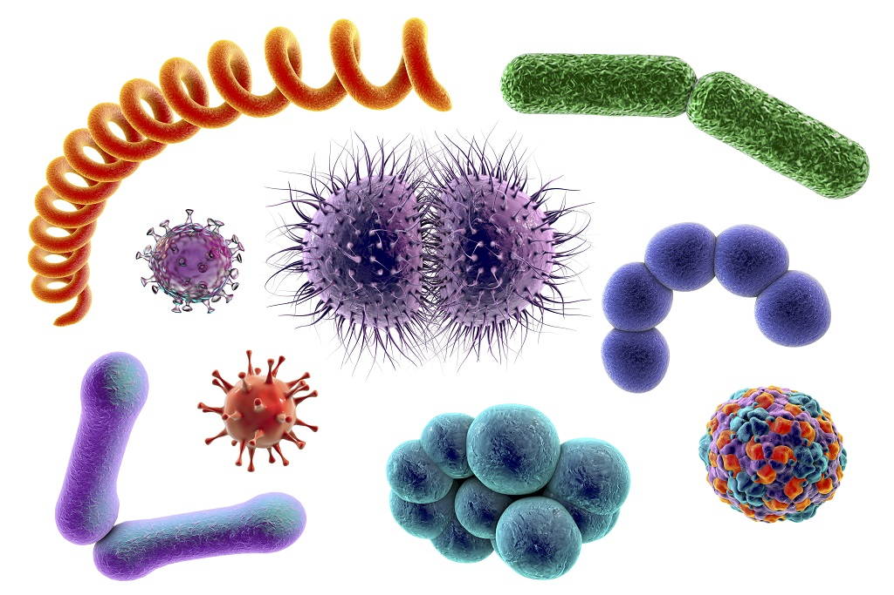

INICIO
La Educación Sexual Integral (ESI) es fundamental para prevenir enfermedades de transmisión sexual (ETS), ya que proporciona a las personas el conocimiento y las herramientas necesarias para tomar decisiones informadas sobre su salud sexual. A través de la ESI, se promueve una comprensión clara de los riesgos asociados con las prácticas sexuales, se fomenta el uso de métodos de protección y se combate la desinformación, contribuyendo a la formación de hábitos saludables y responsables desde una edad temprana.
¿Qué son las ETS?
Las Enfermedades de Transmisión Sexual (ETS), también conocidas como infecciones de transmisión sexual (ITS), son un conjunto de enfermedades causadas por microorganismos que se transmiten de una persona a otra a través del contacto sexual.

- Clamidia: Causada por la bacteria *Chlamydia trachomatis*. Puede infectar el tracto genital y causar síntomas como dolor al orinar, flujo vaginal o uretral anormal, dolor abdominal, y en algunos casos, fiebre. Es una de las ETS más comunes y puede tratarse con antibióticos.
- Gonorrea: Otra infección bacteriana que afecta principalmente el tracto genital, pero también puede infectar la garganta y el recto. Los síntomas incluyen secreción uretral o vaginal anormal, dolor al orinar y, en algunos casos, dolor abdominal. También se trata con antibióticos.
- Sífilis: Causada por la bacteria *Treponema pallidum*, la sífilis puede causar llagas indoloras en los genitales, la boca o el ano en su etapa inicial, seguida de una erupción cutánea. Sin tratamiento, puede progresar a etapas más graves y afectar el corazón, el cerebro y otros órganos. Se trata con antibióticos.
- VIH/SIDA: El virus de la inmunodeficiencia humana (VIH) ataca el sistema inmunológico, lo que puede llevar al síndrome de inmunodeficiencia adquirida (SIDA). Se transmite principalmente a través del contacto sexual sin protección, transfusiones de sangre contaminada, y uso compartido de agujas. No tiene cura, pero los tratamientos antirretrovirales pueden controlar la infección.
- Hepatitis B y C: Son infecciones virales que afectan el hígado y se pueden transmitir a través del contacto sexual, el uso de agujas contaminadas, y de madre a hijo durante el parto. La hepatitis B tiene una vacuna disponible, mientras que la hepatitis C se trata con medicamentos antivirales.
Cuidados
- Uso de preservativos: El uso correcto y constante de condones durante las relaciones sexuales puede reducir significativamente el riesgo de contraer ETS.
- Realizarse pruebas de detección regularmente: Es importante realizarse pruebas de detección de ETS regularmente, especialmente si se tienen múltiples parejas sexuales o si se ha tenido relaciones sexuales sin protección. Las pruebas de detección pueden detectar las ETS incluso si no se presentan síntomas, lo que permite un diagnóstico temprano y un tratamiento adecuado.
- Comunicación abierta y honesta: Hablar abierta y honestamente con la pareja sexual sobre el historial de salud sexual y los riesgos puede ayudar a reducir el riesgo de contraer ETS. Es importante discutir la importancia del uso de preservativos y la realización de pruebas de detección.
- Evitar el consumo de drogas y alcohol antes y durante las relaciones sexuales: El consumo de drogas y alcohol puede disminuir la capacidad de tomar decisiones saludables durante las relaciones sexuales y aumentar el riesgo de tener relaciones sexuales sin protección.
- Educación sexual: La educación sexual integral que incluya información sobre la prevención de ETS, el consentimiento, la anticoncepción, y la salud sexual y reproductiva puede ayudar a promover comportamientos sexuales seguros y saludables.
- Buscar atención médica temprana: Si se sospecha que se ha estado expuesto/a a una ETS o si se presentan síntomas, es importante buscar atención médica temprana para recibir un diagnóstico y tratamiento adecuados.
Videos Explicativos
|  | Hay espacios en los que pueden pasar tanto adolescentes de 16 a mayores de edad a hacerse testeos de VIH y demás ETS. Estos testeos son totalmente gratuitos y el análisis te lo dan a los 15 minutos. | |
|  | Este video habla también de las ETS y lo visto en la página, solo que está más resumido. | |
 |
Hay varios mitos que siguen pensándose hoy en día sobre el VIH. Como sociedad debemos informarnos y hablar de las ETS con consciencia, dejar la ignorancia de lado y poder hablar de las ETS sin miedo. |
Contáctanos
En caso de que tengas dudas si podrías tener una ETS, contáctanos: